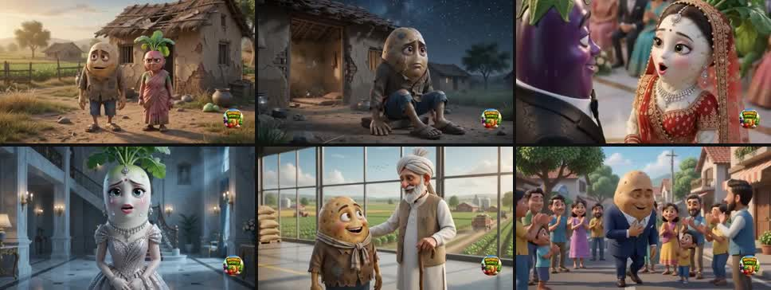
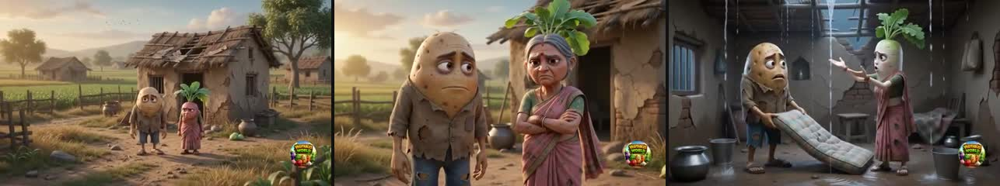

The story & the hook

The arc: poor potato and radish couple → a rich eggplant tempts the radish away with his Rolls-Royce and mansion → lavish wedding → she is miserable and mistreated in luxury → the potato works honestly, is mentored, becomes successful → karma. Classic "chose money over love, then paid for it."

The first 6 seconds: broken house → family tension → rain pouring through the roof onto the floor. Poverty is hammered home immediately. The moral is spoken by the hero at the end, then a plain "THE END — SUBSCRIBE" card.